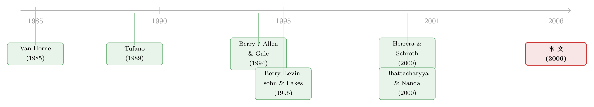

抄你，免费、且立等可取——可发明证券的投行，凭什么还是赢？
本文读的是 Schroth (2006, Review of Financial Studies)：用全样本权益挂钩与衍生证券的承销数据、一个差异化产品的需求模型，作者证明了发行人对创新者承销服务的需求大于对模仿者的需求；而且这个需求优势会随证券的生命周期逐渐消退，对越靠后「世代」的证券消退得越快。背后的故事不是价格、不是搜寻成本、也不是转换成本，而是信息——创新者对如何"做"这只证券掌握着私有知识，模仿因此是不完美的。
1 一桩没有专利的"抄袭"生意
先讲一个让经济学家不太舒服的事实。
过去二三十年，华尔街投行发明了数量惊人的新型公司证券——权益挂钩票据、可强制转换优先股、各种把本金或票息绑到某个指数或某只股票上的衍生债。问题是：这些"发明"几乎一上市就被抄走了。美国证监会 (SEC) 的信息披露规则会把一只新证券的结构迅速公之于众；竞争对手把它逆向拆解、照着发一只几乎一样的，开发成本只是原创者的一个零头；最要命的是——金融产品无法申请专利，你根本没有任何法律手段去阻止别人抄。
Tufano (1989) 把这件事钉死成了一组"程式化事实"：模仿往往在第一只新证券发行后极短的时间内就出现，原创者几乎没有独占期；开发成本对模仿者显著更低。换句话说，发明一只新证券，在经济上看起来像一桩稳赔的买卖——你花大价钱开了路，别人立等可取、分文不花地跟进来分蛋糕。
可偏偏，Tufano 还观察到一件更费解的事：原创者依旧赢。在一只证券的整个历史上，发明它的那家银行，承销的资本量通常超过它最大的模仿者。免费、即时、又拦不住的抄袭，竟然没能把原创者的领先优势抹平。
这就是悬念。原创者凭什么还能赢？
2 真正的问题：是"便宜"，还是"被偏爱"？
接着，一个自然的问题是：原创者的市场份额优势，到底从哪儿来？
逻辑上只有两条路。要么是原创者把承销费（即承销价差，underwriting spread）压得更低，用价格抢市场；要么是发行人本身就更愿意找原创者承销——也就是说，对原创者那只"品种"的需求天生更大。这两件事，在市场份额的数据里是混在一起的：份额高，可能是因为价格低，也可能是因为产品更受青睐。
而 Tufano (1989) 的做法，恰恰分不开这两者。他比较承销价差时，只在发行同一只证券的不同银行之间比较，所以他度量的并不是"跨不同证券、对不同银行承销服务的需求"。要回答"原创者是不是真的更受偏爱"，你需要的是一个能把市场份额拆成「价格」与「需求」两块的工具。
这正是本文真正关键的一步：把"市场份额"翻译成"需求函数"。
作者借来了产业组织里成熟的差异化产品需求估计 (differentiated-products demand estimation) 框架——也就是 Berry (1994)、Berry, Levinsohn and Pakes (1995, 即 BLP) 那套用来估计汽车、谷物市场需求的离散选择 (discrete choice) 模型。核心思路是：把每一次承销当成发行人的一次"购买决策"，发行人在一堆"品种 (variety)"里挑一个。一个品种，就是一只证券类型 × 一家承销商的组合：比如"摩根士丹利发的 PERCS"和"美林发的 PERCS"是两个不同品种；同一家族里的 TOPRS 又是另一组品种。原创者和模仿者，正是在"承销商"这一层被区分开的。
把所有发行人的选择加总，模型就能预测出"不同银行用不同证券所占的承销市场份额"。而识别 (identification) 的来源，在于：同一只证券、不同银行的品种，其市场份额随承销价差怎样变化；以及彼此可以相互替代的相似品种之间，价差又如何牵动份额。一旦把价格的作用从份额里剥出来，剩下那块系统性偏向原创者的份额，就是需求优势本身。
这跟另一桩"为什么贵的承销方式反而赢"的公案是同一类问题——发行人愿意为某种承销服务多付钱，背后未必是钱的事。关于这一点，可参见《为什么「贵」的承销方式反而赢了？》。
当然，价格（价差）本身是内生的：需求强的品种，价差也可能更高。作者用了 BLP 式的工具变量来处理——拿同一产品市场内、其他品种或其他银行的特征均值（如该银行累计的创新数、平均的赎回保护年限、到期收益率、收益率优势）作为价格的工具。直觉是：这些"竞争对手的成本/供给侧特征"会通过竞争影响本品种的定价，却不直接进入本发行人对本品种的偏好。
3 需求模型：一棵选择树
既然这是一篇带结构模型的文章，我们把它的设定一步步摆清楚。
发行人 \(i \in I\) 需要外部融资，它要从品种集合 \(J=\{1,2,\dots,J\}\) 里选一个。这些品种按"家族"分组：用 \(g=1,\dots,G\) 索引各组，构成 \(J\) 的一个划分 \(G=\{J_1,J_2,\dots,J_G\}\)，每个 \(J_g\) 装着在特征上彼此最接近的那些品种——比如所有名叫 PERCS 的、所有名叫 LYONS 的。再用 \(b\) 表示银行集合 \(B\) 中的某家承销商。于是一个品种 \(j\in J\) 就是一个唯一的 \((b,g)\) 组合。发行人先选证券家族，再在家族内部选承销商——这是一棵两层的嵌套 logit (nested logit) 选择树。
而整篇文章要估计的核心对象，是发行人 \(i\) 选择品种 \(j\) 所得到的价值 \(u_{ij}\)。它写成一个随机效用 (random utility) 的形式：
几点直觉值得停下来说清楚。
其一，价值不是直接挂在募集额 \(y_i\) 上，而是挂在 \(y_i - p_j\) 上——即"净到手的钱"。这一步把承销费 \(p_j\) 自然地嵌进了效用：费越高，净额越少，价值越低。需求因此对价差敏感，模型由此具备一条向下倾斜的需求曲线。
其二，\(q_j\) 里塞进了一个"创新者/模仿者"的身份标记。如果原创银行在如何为客户结构化这只证券上掌握更优的信息，那么这种优势就会通过 \(q_j\) 写进更高的 \(u_{ij}\)，进而表现为对该品种更大的需求。于是，"承销商的身份"在这里成了"他做工程选择的质量"的浓缩——估计一个依赖于银行特征的需求函数，等价于在度量这家银行承销该证券时的"超额知识"。
其三，\(\varepsilon_{ij}\) 承销商看不见，且独立同分布。正是它的分布形式（极值分布族）让加总后的选择概率有了 logit 的闭式解，从而把"每个发行人的离散选择"变成"可估计的市场份额"。
把这套结构估出来后，"创新者"那一项的系数，就直接量出了创新者相对模仿者的需求优势有多大、随时间怎么走。
论文正文在此处之后（第 3、4 节给出嵌套 logit 的具体估计与稳健性）被截断，我手上没有那几张系数表的确切数值。下文凡涉及结构估计的部分，我只报告其符号与方向性结论（作者自己也称之为 "(qualitative) results"）；凡是给出具体数字的，都来自我能读到的描述性证据（表 1–表 3）。该说"看不到"的地方，我不替它编一个系数出来。
4 数据
数据来自 Securities Data Company (SDC) 的 New Issues 数据库：全部权益挂钩与衍生类公司证券的公开与私募发行，记录了发行人名称、募集额、承销商、承销价差，以及到期收益率、平均久期、相对国债的票息利差、赎回条款等发行细节。作者再用六位 CUSIP 把它和季度 COMPUSTAT 合并，拿到发行人的财务信息。
- 样本期：1985 年 4 月至 2001 年 3 月。
- 样本量：
662笔权益挂钩与衍生证券发行。 - 分类：SDC 里有
50个不同证券类型；作者依据《Investment Dealers' Digest》等业内文献中的专家描述，把它们归为10个"家族 (families)"。每只证券按它在家族里出现的先后，被赋予一个世代 (generation) 编号——比如 MIPS 是某税收优惠优先票据家族的第一代，TOPRS 是第四代。 - 创新者定义：沿用 Tufano (1989)，把一只证券首发的承销商定义为它的创新者。
描述性证据已经把悬念铺得很足。在 50 个产品里，18 个被模仿。在这 18 个里，创新者在新发笔数上领先 15 个、在承销本金上领先 13 个——领先是常态。而且模仿来得极快：有 10 只证券的第二笔承销交易就是模仿者做的。表 3 也给出，从首发到第一笔模仿交易，平均间隔 484 天（中位数仅 214 天）——独占期短得可怜。
优势在早期世代尤其明显：模仿者本金 / 创新者本金这个比值，只看第一代证券是 0.34，而把所有被模仿证券放在一起是 0.68。换句话说，越是"开山"的证券，创新者把模仿者甩得越远。
那价格呢？表 3 的配对均值检验（Panel A）给出了这篇文章最关键的一块"反证"：创新者与模仿者的承销价差之差，均值在 0.05–0.08 个百分点之间，但统计上不显著（在不同的时间频率下 \(p\) 值落在 0.12–0.19，备择假设是差为正）。也就是说，创新者并没有靠压价取胜——如果有什么差别，反而是创新者的费率略高一点点。既然不是价格，那份额优势就只能来自需求那一侧。这正是把读者推向"需求模型"的那只手。
（补一组体量感的数字：表 3 Panel B 显示，单笔发行募集额均值 306 百万美元、中位数 175.5 百万；承销价差均值 2.44%；私募占比 13.8%；发行人总市值中位数约 41 亿美元。）
5 主要结果，与那个"于是反转"的瞬间
把需求模型估出来，作者得到四条结论（方向性）：
- 需求对价差敏感——承销服务的需求会随其价格（价差）上升而下降，需求曲线确实向下倾斜；
- 创新者的需求 > 模仿者的需求——平均而言，发行人对"由创新者承销某证券"的需求，大于对"由模仿者承销同证券"的需求；
- 这个差距在证券的生命周期中逐渐消失——不是一锤定音的永久优势，而是会被慢慢追平；
- 越靠后世代的证券，模仿者追得越快——对越晚出现在创新序列里的证券，创新者的领先消退得越迅速。
第 1、2 条算是把悬念正面解开了：原创者赢，不是因为便宜，而是因为被偏爱——发行人对它的承销服务有更大的需求。这是文献里第一次用需求估计直接把"先发优势"落到"更大的需求"上。
但真正"于是反转出现"的，是第 3、4 条的动态。如果优势来自某种永久的禀赋——比如原创者天生客户关系好、品牌响——那它不该随时间衰减，更不该对后代衰减得更快。可数据恰恰显示它在衰减，而且衰减的速度和"世代"有系统关系。这个特定的动态形态，几乎是在替一种机制作证：原创者手里那点优势，是一种会被慢慢学走的私有信息。
6 为什么偏偏是"信息"——以及，模仿为何越来越少
到这里，作者把全文的"一个核心"讲透：原创者的优势，来自信息不对称，而非搜寻成本、营销网络或转换成本。
这一刀切得很讲究。此前的理论各执一词：Allen and Gale (1994) 说原创者搜寻潜在发行人/投资者的成本更低；Ross (1989) 说建营销网络有固定成本、原创者平均营销成本更低；Bhattacharyya and Nanda (2000) 说只要客户更换承销商有转换成本，原创者就能攫取更大价值。本文则给出了第四种、也更贴合权益挂钩证券特性的解释：模仿是不完美的。
为什么不完美？因为这类证券由许多参数刻画，其中一些逐笔不同。以 Equity-Linked Note (ELK) 为例——它是第一只把本金偿付绑到另一家上市公司股价上的债。绑哪只股票是可观测的；但"对不同发行人/投资者来说，最优该绑哪只股票"这件知识，是研发里的私有成分。模仿者就算看懂了 ELK 的结构，也未必能从可观测信息里反推出"该给这个客户绑哪只股票"。于是原创者能保留一部分私有信息，攫取更大比例的增加值——因为他被模仿得不完美。
这一机制能同时解释那两条动态：随着越来越多的交易被观察到，原创者的私有工程知识会逐渐外溢给所有银行，优势因此随生命周期消退；而越靠后世代的证券，能从更早交易里"溢出"的信息越多，优势也就消退得越快。这套图景，与 Herrera and Schroth (2000) 的理论一脉相承——率先行动者收到关于客户与市场的私有信号，因而能开出比模仿者更诱人的交易；也与 Van Horne (1985) 关于模仿者进入后竞争动态的预测吻合，Kanemasu, Litzenberger and Rolfo (1986) 在剥离式国债里也观察到同样的模式。
更漂亮的是，作者把这套逻辑推回到"要不要模仿"这个决策本身。他给出一个简单模型：模仿在越靠后的世代越有利可图（因为模仿者的需求向创新者收敛得更快），并提高了将来自己也去创新的机会——但模仿同时把信息外溢给了局外的非模仿者。如果模仿会把信息漏给别人，那么沿着证券序列往后，模仿反而会变得更少。作者用"某证券是否被模仿"对其世代编号做概率回归，证据支持了这个略带反直觉的推断。
7 文献脉络
把这条线捋一捋，会看到它是两股水流的汇合。
一股，是金融创新的实证。早期，Miller (1986) 把六七十年代到八十年代的创新浪潮，归因于规避税法与管制的激励；Finnerty (1992) 给出了创新证券的全景式综述。真正立起靶子的是 Tufano (1989)——他记录了"先发优势"的程式化事实：抄袭即时、开发成本不对称、却依然是原创者拿走最大份额。此后 Black and Silber (1986) 在期货市场、Kanemasu et al. (1986) 在剥离式国债里给出了相似证据；Van Horne (1985) 则从理论上预言了模仿者进入后的竞争动态。到了世纪之交，理论开始分叉去解释"为什么不可申请专利的创新仍值得研发"：Allen and Gale (1994) 的搜寻成本、Ross (1989) 的营销网络、Bhattacharyya and Nanda (2000) 的转换成本，以及 Herrera and Schroth (2000) 的"率先者私有信号"。
另一股，是差异化产品的需求估计。从 McFadden (1981) 的概率选择计量、Anderson, De Palma and Thisse (1989) 与 Caplin and Nalebuff (1991) 的线性偏好设定，到 Berry (1994)、Berry, Levinsohn and Pakes (1995) 把内生价格、工具变量与离散选择糅成一套可操作的产业组织工具，再由 Nevo (2000) 写成实务指南。
本文站在两股水流的交汇点：它把 BLP 那套估需求的机器，第一次搬到了"投行承销服务"这个市场上，从而把 Tufano 留下的"原创者为何领先"之问，从描述推进到了结构估计——并给出了一个动态的、可被信息外溢解释的答案。

这套"证券由谁来设计、为谁而设计"的思路，与证券设计/分离均衡那一脉也彼此呼应，可对照《自由进入的市场里，为什么钱还能「白赚」？》；而"承销商身份/声誉如何决定发行人把活儿交给谁"，则可参见《没有招牌的新人，凭什么让你把发债的活儿交给他？》。
8 评论与延伸（Q&A + 研究方向）
(a) 几个可能的疑问
Q：这篇和 Tufano (1989) 到底差在哪？
Tufano 度量的是"市场份额"，而且只在发行同一只证券的不同银行之间比较价差，因而无法把份额优势拆成"价格"与"需求"两块。本文用差异化产品需求模型，跨证券、跨银行估计需求函数，从而直接把份额优势归因到需求本身——这是从"描述事实"到"识别机制"的一步。
Q：凭什么断定优势来自"信息/工程知识"，而不是别的？
这是间接推断，作者也坦承。直接证据有两条：价差无显著差异（排除价格渠道）；优势随生命周期衰减、且对后代衰减更快、并伴随信息外溢。这种特定的动态形态与"私有工程信息逐渐扩散"高度一致。但"信息"本身从未被直接观测——它是被动态 pattern"反推"出来的，这正是识别上最软的一环。
Q：承销价差是内生的，怎么处理？
是的，价差与需求冲击相关。作者用 BLP 式工具变量——同一产品市场内其他品种 / 其他银行的特征均值（累计创新数、赎回保护年限、到期收益率、收益率优势），它们经由竞争影响定价，却不直接进入本发行人对本品种的偏好。这套工具的有效性，最终取决于这条排他性约束 (exclusion restriction) 是否成立。
Q："创新者 = 首发承销商"这个定义可靠吗？
它与 Tufano 一致、操作上干净，但"谁拿到首发"并非随机分配——可能掺杂了运气、既有客户关系或事前的银行规模。若首发本身就和"做得更好"相关，那"创新者效应"里就混进了选择，需谨慎解读为纯粹的信息租金。
Q：为什么越靠后世代，模仿反而更少？这不反直觉吗？
关键在两股相反的力。一方面，后代证券的模仿者需求收敛更快、模仿更有利可图，这会鼓励模仿；另一方面，每一次模仿都会把信息外溢给局外的非模仿者，长期看侵蚀模仿的回报。当后者占上风时，沿序列往后模仿就变得更稀疏。
Q：样本只限权益挂钩证券，结论能外推吗？
作者是刻意限制的：这类证券复杂、参数众多，"原创者藏着私有结构化信息"的故事最贴切；而抵押贷款支持证券等对投行已太熟悉，结构里藏不住东西。所以本文的机制更可能适用于"信息不对称强"的创新，未必能推广到所有金融创新。
(b) 几个可能的研究问题与提案
1. 公司债创新里的先发优势——以 ESG/可持续挂钩债为样本。 【经济故事】可持续挂钩债 (SLB)、绿色债的"结构"（KPI 设定、票息阶梯、惩罚机制）同样是逐笔工程，原创承销商或握有"该给哪类发行人设哪种 KPI"的私有知识。本文的机制可在一个全新、且政策含义更强的市场里复验。 【可行性】中。数据用 Bloomberg / DealScan / Refinitiv 的债券发行库 + 承销商信息；识别可沿用本文的需求模型，难点在于 SLB 历史尚短、世代序列不长。
2. 外资承销商进入，会侵蚀本土创新者的信息租金吗？ 【经济故事】若优势来自私有信息，那么外资大行带着跨市场经验进入，可能加速信息外溢、压缩本土原创者的需求优势——这把"外资持有人/中介"的视角接到了创新租金上。 【可行性】中低。需跨国承销数据与外资银行进入的时点（可借鉴金融开放的自然实验），跨境承销的可比性是主要障碍。
3. 创新证券的二级市场流动性，是否也偏向创新者承销的品种？
【经济故事】如果创新者更懂这只证券，它承销的品种可能在二级市场更易被定价与做市，从而流动性更好。这把"承销端的信息优势"延伸到了"流动性"维度。
【可行性】中。公司债可用 TRACE 成交数据，按承销商 × 证券类型构造流动性指标；难在把承销商身份与二级市场逐笔成交对齐。
4. 直接度量"可逆向工程程度"，再检验模仿速度。 【经济故事】本文的信息机制隐含一个可检验的中介变量：证券设计越"可被反推"，模仿越快、创新者优势越短。 【可行性】中。用大模型读《Investment Dealers' Digest》与招股书文本，给每只证券的设计复杂度/可逆向程度打分，再回归到"首发到首次模仿的间隔天数"上（本文已有这个变量，均值 484 天）。
5. 把需求优势与定价（underpricing / 价差）联动起来。 【经济故事】既然创新者并不靠压价，那么它是把信息租金兑现成了更高的费率，还是兑现成了更优的发行定价以换取更大需求？这能进一步分清"租金落到了谁口袋"。 【可行性】高。SDC + TRACE 数据齐备，可在本文需求框架上加一个定价方程联立估计。
9 我的判断
这篇文章的贡献是结构性的：它第一次把"先发优势"从一组描述性事实，推进成了一个可估计的需求命题——原创者赢，是因为发行人对它有更大的需求，而非因为它更便宜（价差检验给出了关键的反证）。更难得的是它没有止步于截面，而是用动态把机制"逼"了出来：优势的衰减速度与世代的系统关系，几乎是为"私有信息逐渐外溢"量身定做的指纹；而由此反推出的"模仿沿序列变少"，则是一个漂亮且可证伪的副产品。
担忧也集中在"信息"这一核心上。信息从未被直接观测，整条因果链是从动态形态反推出来的；任何能产生"早期优势大、随时间收敛、对后代收敛更快"的替代机制（比如声誉的折旧、客户关系的自然流失、抑或样本里后代证券本就更小众），都可能伪装成"信息外溢"。再加上"创新者 = 首发承销商"并非随机分配，需求优势里可能混有银行规模与既有关系的选择效应。工具变量的排他性约束（用竞争对手特征做价格的工具）也需要更多直接的辩护。
我接下来最想看到的，是把"信息"这个隐变量显性化：用文本度量证券设计的可逆向程度，或用承销团队的人员流动追踪知识扩散，让"信息外溢"从一个被反推的故事，变成一个能被直接测量、并独立预测模仿速度与优势衰减的变量。那样，这条优雅的动态推断才算真正落了地。
参考文献
Allen, F., and D. Gale (1994). Financial Innovation and Risk Sharing. MIT Press, Cambridge, MA.
Anderson, S., A. De Palma, and J.-F. Thisse (1989). Demand for Differentiated Products, Discrete Choice Models, and the Characteristics Approach. The Review of Economic Studies 56(1), 21–35.
Berry, S. (1994). Estimating Discrete-Choice Models of Product Differentiation. RAND Journal of Economics 25(2), 242–262.
Berry, S., J. Levinsohn, and A. Pakes (1995). Automobile Prices in Market Equilibrium. Econometrica 63(4), 841–890.
Bhattacharyya, S., and V. Nanda (2000). Client Discretion, Switching Costs, and Financial Innovation. The Review of Financial Studies 13(4), 1101–1127.
Black, D., and W. Silber (1986). Pioneering Products: Some Empirical Evidence from Futures Markets. Working paper 395, Salomon Brothers Center, New York University.
Caplin, A., and B. Nalebuff (1991). Aggregation and Imperfect Competition: On the Existence of Equilibrium. Econometrica 59(1), 25–59.
Finnerty, J. (1992). An Overview of Corporate Securities Innovation. Journal of Applied Corporate Finance 4(1), 23–39.
Herrera, H., and E. Schroth (2000). Profitable Innovation Without Patent Protection: The Case of Credit Derivatives. Working paper 01–02, Berkeley Center for Entrepreneurial Studies, New York University.
Kanemasu, H., R. Litzenberger, and J. Rolfo (1986). Financial Innovation in an Incomplete Market: An Empirical Study of Stripped Government Securities. Working paper 26–86, Rodney White Center, University of Pennsylvania.
McFadden, D. (1981). Econometric Models of Probabilistic Choice. In C. Manski and D. McFadden (eds.), Structural Analysis of Discrete Data with Econometric Applications. MIT Press, Cambridge, MA.
Miller, M. (1986). Financial Innovation: The Last Twenty Years and the Next. Journal of Financial and Quantitative Analysis 21, 459–471.
Nevo, A. (2000). A Practitioner's Guide to Estimation of Random-Coefficients Logit Models of Demand. Journal of Economics and Management Strategy 9(4), 513–548.
Ross, S. (1989). Institutional Markets, Financial Marketing, and Financial Innovation. The Journal of Finance 44(3), 541–556.
Schroth, E. (2006). Innovation, Differentiation, and the Choice of an Underwriter: Evidence from Equity-Linked Securities. The Review of Financial Studies 19(3), 1041–1080.
Tufano, P. (1989). First-Mover Advantages in Financial Innovation. Journal of Financial Economics 25(2), 213–240.
Tufano, P. (1995). Securities Innovations: A Historical and Functional Perspective. Journal of Applied Corporate Finance 7(4), 90–104.
Van Horne, J. (1985). Of Financial Innovations and Excesses. The Journal of Finance 40(3), 621–631.